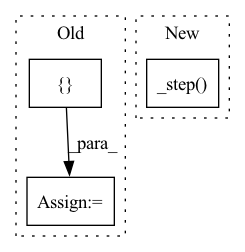

Pattern ID :39604

Before Change
// action is integer (0 ~ 8) or string (sequence)
selected_player = random.choice(list(actions.keys()))
selected_color = [self.BLACK, self.WHITE][selected_player]
action = actions[selected_player]
x, y = action // 3, action % 3
After Change
// state transition function
selected_player = random.choice(list(actions.keys()))
action = actions[selected_player]
self._step(action, selected_player)
def _step(self, action, player):
self.step(action, player)
self.record[-1] = [self.BLACK, self.WHITE][player], action
In pattern: SUPERPATTERN
Frequency: 3
Non-data size: 3
Instances
Fragment ID: 112675351
Project Name: dena/handyrl
Commit Name: cd0474463a68c3a6e8e34e580f02101243a76c69
Time: 2021-03-04
Author: a.a.b.a.b.c.a.b.c.d.abcd1234@gmail.com
File Name: handyrl/envs/parallel_tictactoe.py
M Class Name: Environment
N Class Name: Environment
M Method Name: steps(2)
N Method Name: steps(2)
M Parent Class: TicTacToe
N Parent Class: TicTacToe
M File Name: handyrl/envs/parallel_tictactoe.py
N File Name: handyrl/envs/parallel_tictactoe.py
M Start Line: 24
M End Line: 38
N Start Line: 22
N End Line: 24
'>
Before Change
y_hat = out["prediction"]
y_all = x["x_cont"][..., self.hparams.target_idx]
loss = self.loss(y_hat, y)
log = {"val_loss": loss}
// log prediction figure
if batch_idx % self.hparams.log_interval == 0:
fig = self.plot_prediction(y_all[0], y_hat[0].detach().cpu()) // first in batch
self.logger.experiment.add_figure(
After Change
return self._epoch_end(outputs, label="train")
def validation_step(self, batch, batch_idx):
return self._step(batch, batch_idx, label="val", log_batch_idx=True)
def validation_epoch_end(self, outputs):
return self._epoch_end(outputs, label="val")
'>
Fragment ID: 112675350
Project Name: jdb78/pytorch-forecasting
Commit Name: 1806e120498ddea1f0e04db08f8249ebe0b217b1
Time: 2020-06-20
Author: beitner.jan@bcg.com
File Name: temporal_fusion_transformer_pytorch/model/__init__.py
M Class Name: TemporalFusionTransformer
N Class Name: TemporalFusionTransformer
M Method Name: validation_step(3)
N Method Name: validation_step(3)
M Parent Class: pl.LightningModule
N Parent Class: pl.LightningModule
M File Name: temporal_fusion_transformer_pytorch/model/__init__.py
N File Name: temporal_fusion_transformer_pytorch/model/__init__.py
M Start Line: 431
M End Line: 443
N Start Line: 382
N End Line: 382
'>
Before Change
y_hat = out["prediction"]
y_all = x["x_cont"][..., self.hparams.target_idx]
loss = self.loss(y_hat, y)
tensorboard_logs = {"train_loss": loss}
interpretation = self.interpret_output(
{name: tensor.detach().cpu() for name, tensor in out.items()}, average_batches=True
)
After Change
return torch.optim.Adam(self.parameters(), lr=self.hparams.learning_rate)
def training_step(self, batch, batch_idx):
return self._step(batch, batch_idx, label="train", log_batch_idx=False)
def on_after_backward(self):
if self.global_step % self.hparams.log_interval == 0 and self.hparams.log_interval > 0:
self._log_grad_flow(self.named_parameters())
'>
Fragment ID: 112675349
Project Name: jdb78/pytorch-forecasting
Commit Name: 1806e120498ddea1f0e04db08f8249ebe0b217b1
Time: 2020-06-20
Author: beitner.jan@bcg.com
File Name: temporal_fusion_transformer_pytorch/model/__init__.py
M Class Name: TemporalFusionTransformer
N Class Name: TemporalFusionTransformer
M Method Name: training_step(3)
N Method Name: training_step(3)
M Parent Class: pl.LightningModule
N Parent Class: pl.LightningModule
M File Name: temporal_fusion_transformer_pytorch/model/__init__.py
N File Name: temporal_fusion_transformer_pytorch/model/__init__.py
M Start Line: 395
M End Line: 415
N Start Line: 372
N End Line: 372